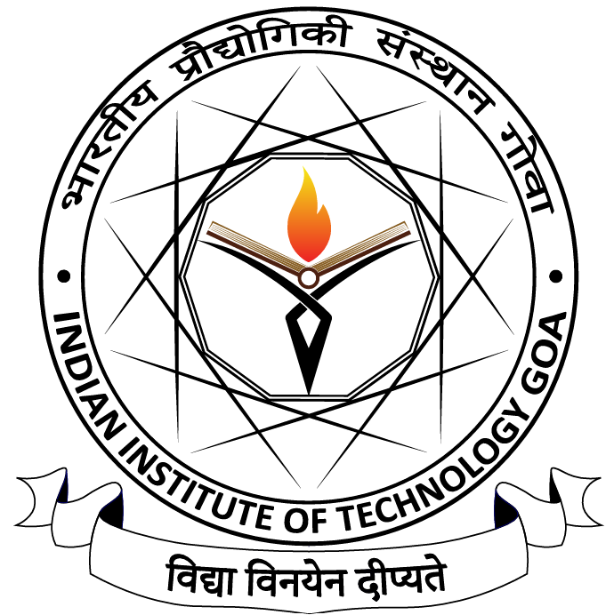
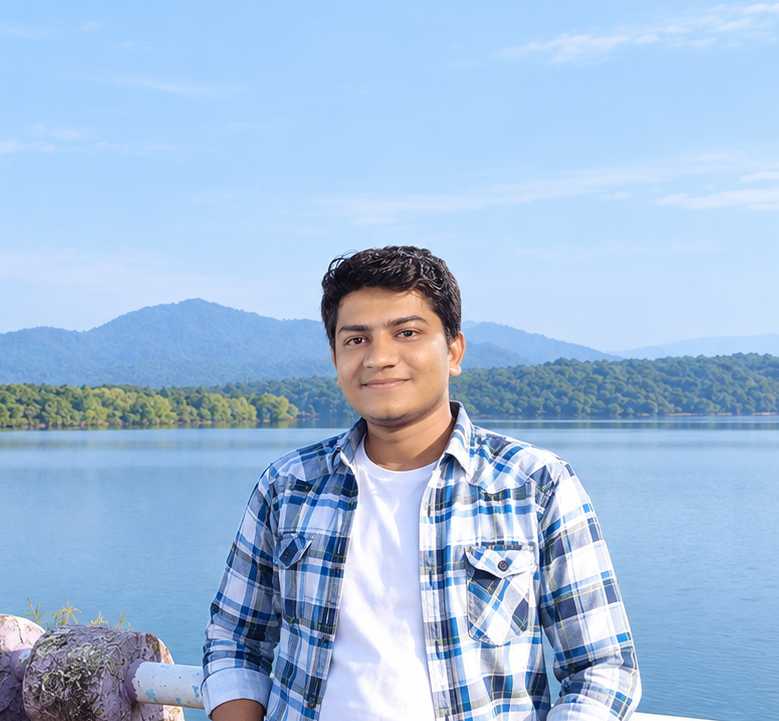
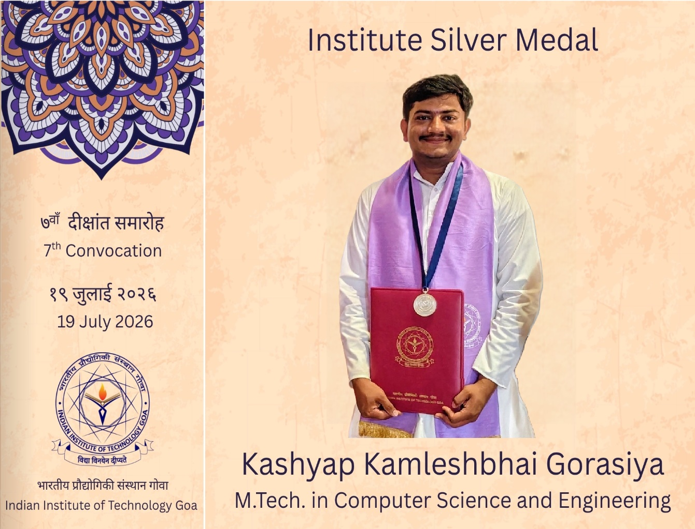
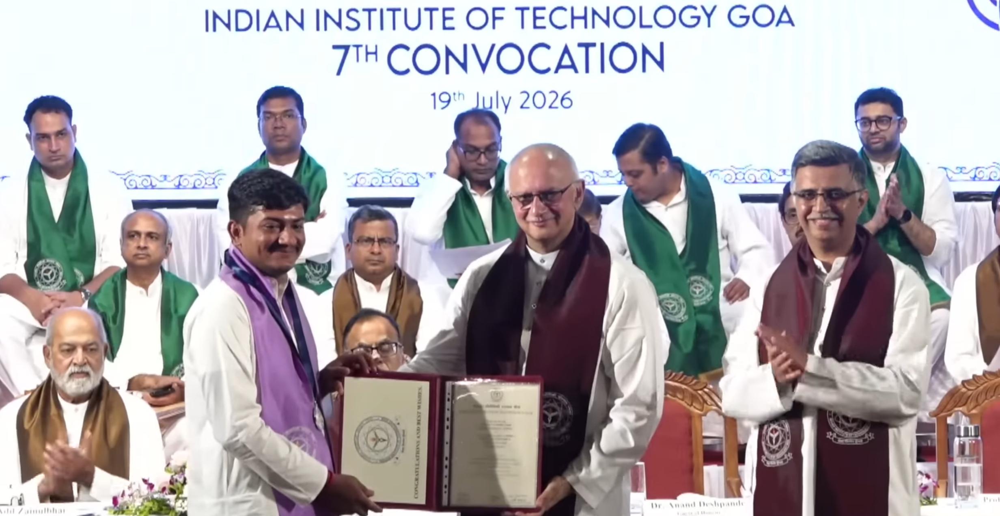
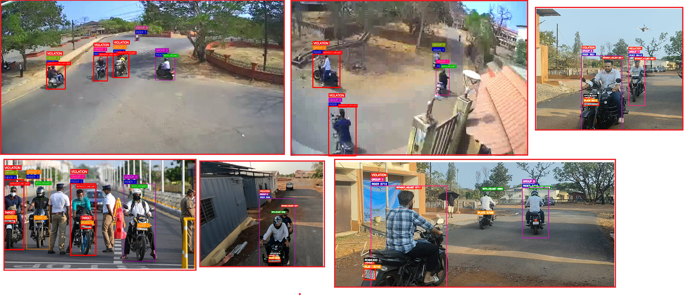
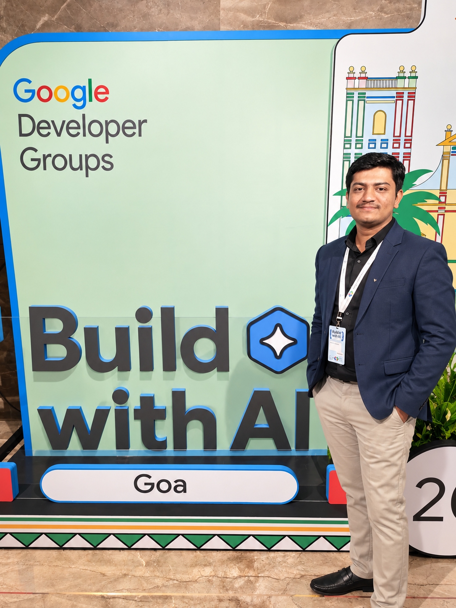
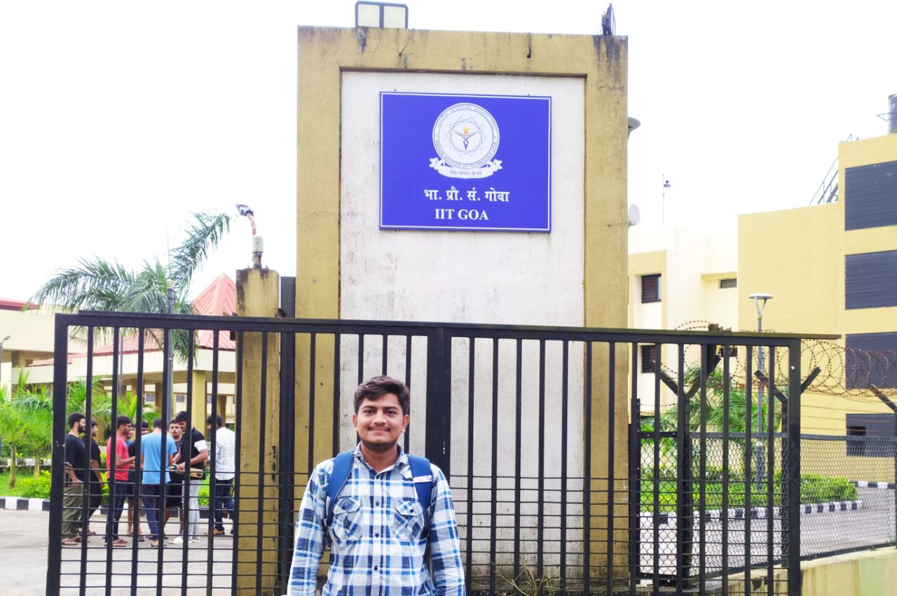
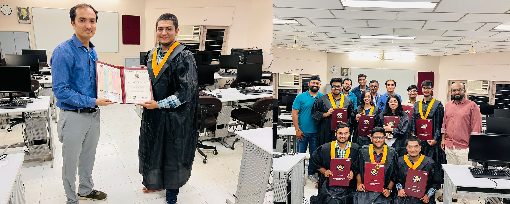
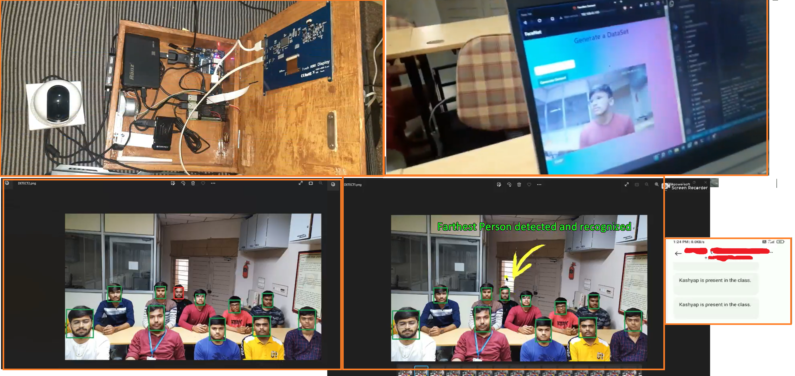

2024 – 2026
M.Tech, Computer Science and Engineering

Indian Institute of Technology GoaCGPA: 9.02/10 Institute Silver MedalBuilding research-driven intelligent systems across deep learning, computer vision, NLP, multimodal RAG, transformers, generative AI, and real-time AI deployment.

Research-oriented AI engineering with end-to-end implementation.
AI Research Engineer / AI Engineer with strong hands-on experience in deep learning, computer vision, natural language processing, transformer architectures, generative AI, LLMs, RAG, AI agents, and agentic AI. Experienced in designing, training, fine-tuning, evaluating, and deploying AI/ML systems for real-world problems.
Research-oriented work includes aerial traffic surveillance, license-plate recognition, object detection and tracking, NLP-based risk classification, document understanding, multimodal RAG, image generation, transfer learning, and precision agriculture.
Strong software engineering and deployment capabilities complement AI research through Python, Java, Spring Boot, REST APIs, microservices, Docker, Terraform, AWS, MLOps, and cloud-native deployment.
Academic foundation in computer science, engineering, and technology.

Indian Institute of Technology GoaCGPA: 9.02/10 Institute Silver MedalDharmsinh Desai University, Nadiad, Gujarat
CGPA: 8.63/10Bharad School, Tramba, Rajkot
Aggregate: 86%Global Science Academy, Tramba, Rajkot
Aggregate: 92.33%AI, research support, and software engineering experience.
M.Tech thesis and research-oriented AI systems.
Project Guide: Dr. Shitala Prasad
End-to-end UAV-based traffic-rule enforcement for aerial surveillance, combining rider and helmet detection, spatial association, license-plate localization, and recognition.
Applied semi-supervised learning, YOLO-based detectors, CBAM, SAHI, transformer-based RF-DETR, TESTR, UNITS, HTS-based OCR, and spatial association for dynamic traffic scenes.
A context-grounded question-answering system for complex, multilingual documents.
Engineered a multimodal RAG pipeline for handwritten, printed, scanned, distorted, and multilingual Indian-language documents. Qwen3-VL 8B provides visual document understanding, FAISS enables semantic Top-K retrieval, LangChain coordinates the workflow, and Llama 3.1 8B generates answers grounded in retrieved context.
Click a project to explore its description, results, and architecture.
Technology stack organized by capability.
Academic achievements, research milestones, and community moments.

Honoured with the Institute Silver Medal for academic excellence at IIT Goa.

Celebrating graduation at IIT Goa convocation.

Presenting drone-based traffic rule enforcement research for safer, smarter urban mobility.

Attending GDG Build with AI Summit Goa 2025, exploring practical innovation.

Campus moments at IIT Goa, surrounded by research, learning, and collaboration.

Celebrating graduation with HOD Dr. Vipul Dabhi and fellow batch toppers.


Demonstrating image-processing attendance system with face recognition, deployment, and automated attendance.
Academic, competitive programming, innovation, and research milestones.
Connect for AI research, engineering, and collaboration.
Research, projects, technical skills, and professional experience are presented in a single, responsive portfolio.